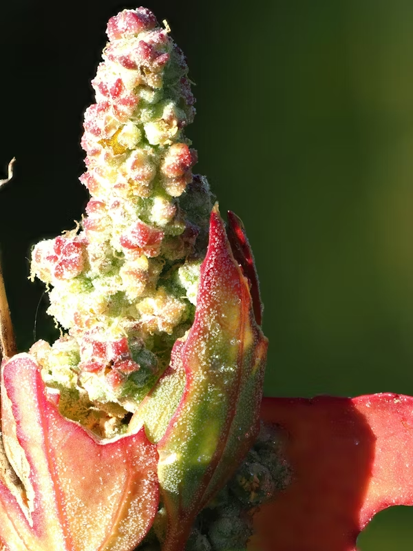
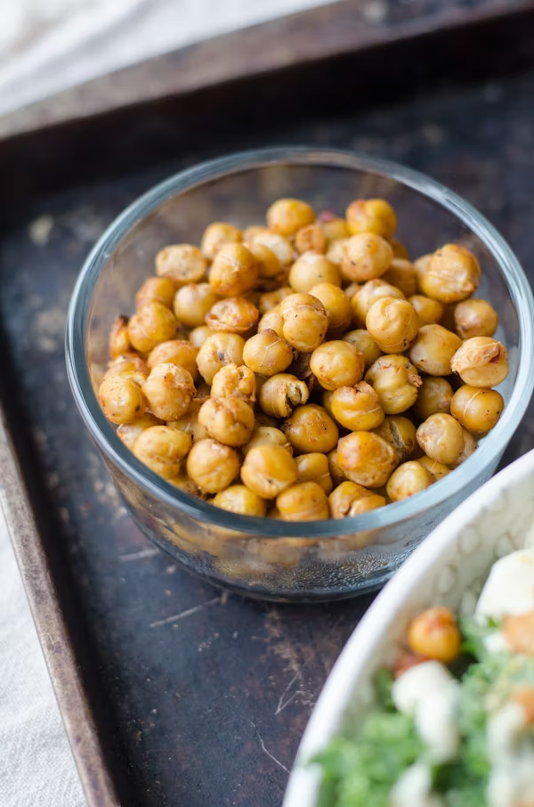
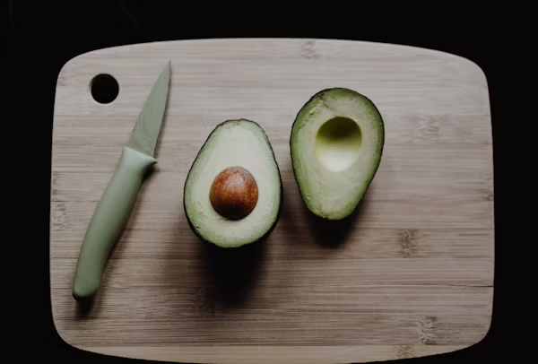
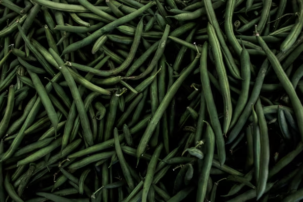
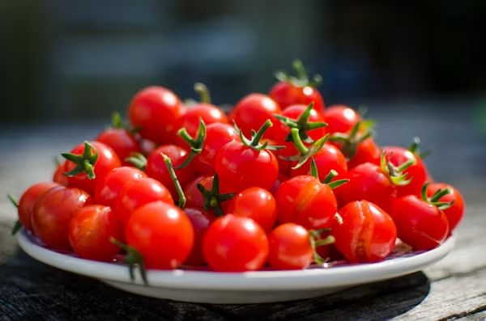
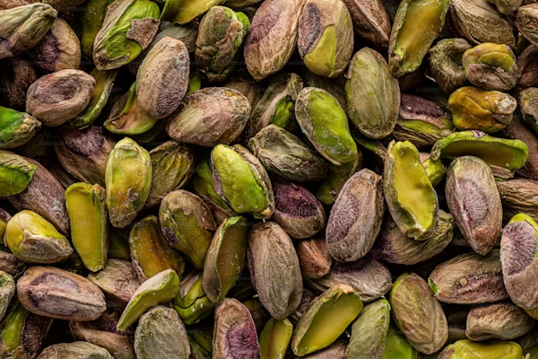
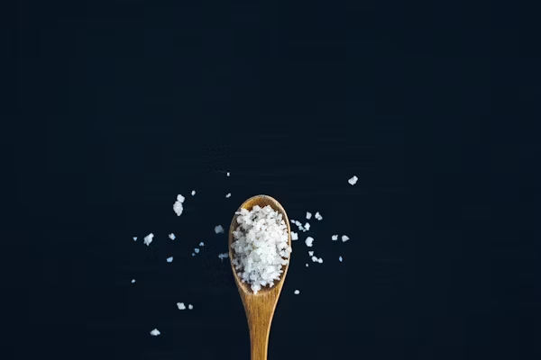

Green Detox Smoothie
The Green Detox Smoothie is a healthy drink rich in fiber and nutrients, perfect for cleansing the body and boosting energy. Made with fresh green vegetables, fruits, and a splash of lime, this smoothie is refreshing and packed with benefits.
Crazy Rich
Super Hard
5 Minutes Preparation
10 Minutes Cooking
653 Kcal Per Serving
Ingredients

1 cup cooked quinoa

1/2 cup roasted chickpeas

1 avocado, sliced

1/2 cup snap peas or green beans

5-6 cherry tomatoes, quartered
 1 cup leafy greens (kale or spinach)
1 cup leafy greens (kale or spinach)

A handful of pistachios

Salt for seasoning
Instructions
- Rinse 1/2 cup quinoa and cook in 1 cup of water. Bring to a boil, then reduce heat to low and cover. Let it simmer for 15 minutes until water is absorbed. Fluff with a fork and set aside.
- Preheat the oven to 400°F (200°C). Drain and rinse canned chickpeas, then pat them dry. Toss them in olive oil, salt, and pepper. Spread on a baking sheet and roast for 20-25 minutes until crispy.
- Steam or blanch green beans briefly (about 3-4 minutes) until tender but still crisp. If using spinach, simply add fresh.
- Quarter the cherry tomatoes and season avocado with salt
- In a bowl, place the leafy greens as the base. Add the cooked quinoa in the center. Top the quinoa with the roasted chickpeas and diced red onion. Arrange the snap peas, cherry tomatoes, and avocado around the bowl. Sprinkle pistachios on the side.
- Drizzle with a bit of olive oil, add a pinch of salt and pepper to taste, and enjoy!